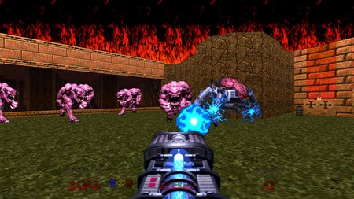
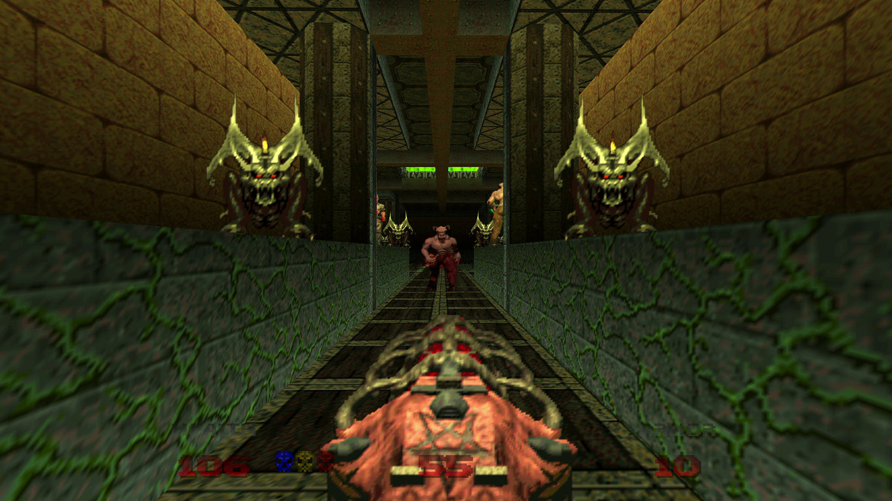

Curiosidades en Doom 64
· El punto de vista del jugador está ubicado al nivel del pecho, en lugar del nivel de los ojos, lo que hace que todos los objetos y personajes parezcan más grandes en relación con el jugador.
· Se pueden ver todos los sprites de objetos, armas y monstruos en el siguiente enlace: The Spriters Resource.
· El juego hace un uso más extensivo de imágenes satánicas (pentáculos, cruces invertidas, representaciones de sacrificios) que la versión de Doom para PC, con diferentes usos de esquemas de horror.
· El nombre del nivel final, The Absolution, fue originalmente el título provisional del proyecto Doom 64 durante su fase de prototipo. Según el programador Aaron Seeler, el juego comenzó como un proyecto mucho más ambicioso que pretendía desviarse significativamente de la fórmula básica de Doom. El juego final hereda muchos de sus temas de textura, con toques de estilos egipcios, mayas y aztecas, de esta primera fase de desarrollo de prototipos. Originalmente, estos tenían la intención de representar los conceptos del Infierno de varias culturas terrestres, dentro de los cuales se basaría completamente el juego.
Volver al índice